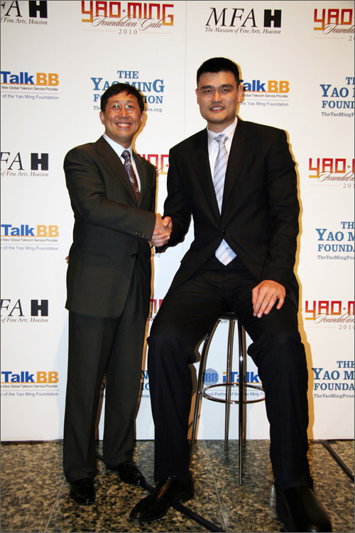

姚明有約：iTalkBB新電信歲末大抽獎!
(弗吉尼亞州維也納市訊)
"共同成就，我們在一起"iTalkBB新電信攜手姚明及其基金會新年大禮登場。想一睹姚明風采嗎？想和這位籃球巨星共進晚餐嗎？想參加別具一格的慈善宴會嗎？
"姚明有約：iTalkBB歲末大抽獎"為廣大iTalkBB用戶及姚明粉絲提供獨一無二的賀歲大獎：讓您與籃球巨星姚明零距離面對面。抽中獎者不僅可以免費參與2010年1月30日在休斯敦藝術博物館舉行的iTalkBB冠名贊助姚明基金會慈善晚宴，還可以免費攜帶一名家屬或朋友一同參與。
晚宴紅毯，嘉賓流連，獨具匠心，格調非凡。iTalkBB還特別為中獎者及其家人朋友提供15分鐘時間，與姚明交流併合影留念。
如果您已經是iTalkBB的用戶，或是在12月1日－12月31日新申請了iTalkBB的服務，您都可以通過iTalkBB"姚明有約"電子郵件從您的郵箱直接填寫"申請"加入抽獎。或者登錄iTalkBB網站，在線填寫899號碼申請加入抽獎。
如果您還不是iTalkBB的用戶，也沒有關係。作為姚明的忠實粉絲，同樣有機會參與抽獎。登錄www.iTalkBB.com，您可以在線填寫三個簡單問答。只要您答對問題，也同樣可以參加抽獎。
歲末除舊塵，新年贏大禮！iTalkBB新電信攜手姚明及其基金會，旨在為"海外華人提供更好的生活服務！" 基於雙方共同的理念，而強強連手。
有關活動詳情，歡迎撥打24小時中文免費服務熱線1－877－482－5522，或登錄網站www.iTalkBB.com。
關於The Yao Ming Foundation：
The Yao Ming Foundation成立於2008年6月，旨在幫助四川大地震中的受災兒童，重建學校，協助教育等。著名NBA球星姚明注資成立的姚明基金會，將他們的工作重點放在中美兒童教育項目。基金會的運營成本全額由姚明出資，以確保基金會的籌款可以完全用於慈善兒童教育項目。
關於 iTalkBB：
iTalkBB新電信是享譽全美的優秀通訊品牌，是國際電訊行業的領導和先驅。其以頂級全球網絡和前沿技術為依託，以最具競爭力的價格為客戶提供高質、清晰的本 地、國內及國際長途電話服務，以及高清中文電視直播、回播與點播服務。其電話業務能完全取代傳統家庭電話，並享受多重免費提供的附加功能如來電等待、三方通 話、來電顯示、呼叫轉移等。另有獨一無二的功能——中國大陸、台灣、香港、南韓當地號碼，當地親友只要撥打此號碼，就能接通到在美國的親友，而無需支付國際 長途費用 。iTalkBB的高清中文電視服務，自問世以來便受到了廣泛的好評和歡迎。超過五十個熱門頻道支持實時直播與48小時回看，海量最新電影電視劇綜藝節目免 費無限點播，讓用戶以最低價格盡享華語娛樂。iTalkBB新電信將不斷努力，與您共同成就更美好的生活。iTalkBB設有24小時中英文的客戶服務熱線: 1-877-482- 5522和官方網站www.iTalkBB.com，一年365天提供不間斷的服務與更多信息的查詢。